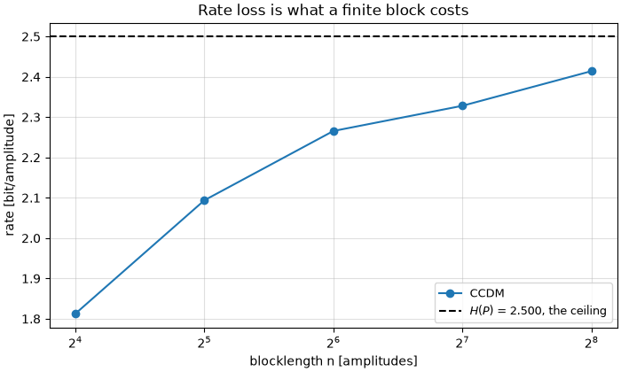
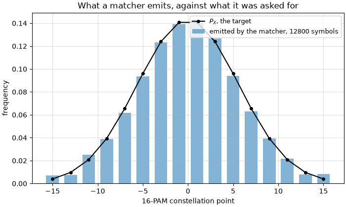
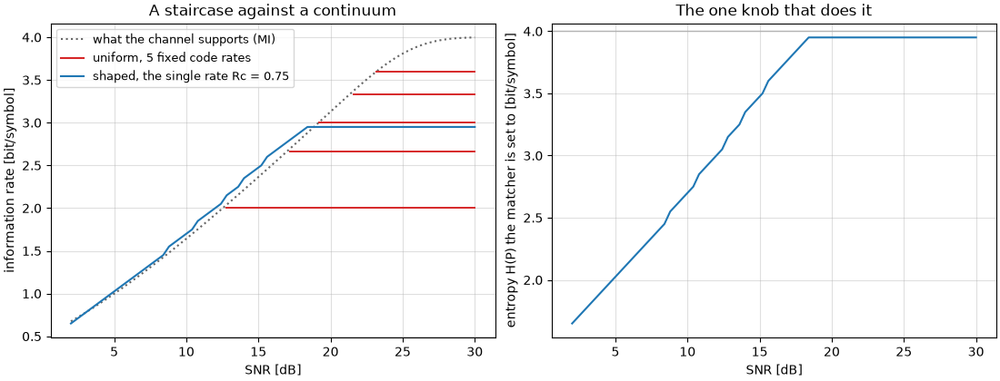
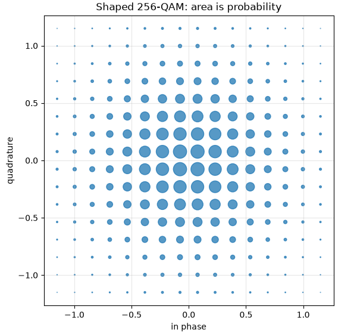

Probabilistic Shaping#
Shannon settled the question in 1948: over an additive white Gaussian noise channel, the input that achieves capacity is a Gaussian. Every constellation in every earlier tutorial of this series is something else – a finite set of points, sent equally often – and a uniform square QAM pays for that with up to 1.53 dB of the available SNR. That loss has a name, the shaping gap, and closing it is what this tutorial is about.
A finite constellation can be made to look Gaussian either by moving the points – geometric shaping – or by keeping them on their grid and sending the inner ones more often. This page is about the second, which is the one that gets deployed: it is tuned by a single number, the points stay on the square grid every receiver algorithm expects, and the Gray labelling survives.
Shaping was worked out around 1990 and then sat unused for twenty-five years: 1.53 dB is not much next to the 10 dB that turbo and LDPC codes began delivering in 1993, and nobody had a practical way to build the transmitter. That arrived in 2015, and it is the architecture step 2 builds.
Note
Before you start. This tutorial reads rates rather than error rates, so it assumes you are comfortable with a chain (First Simulation) and have met mutual information somewhere. It sits naturally after Channel Coding: shaping and coding are the two halves of the same transmitter, which is what the PAS architecture of step 2 is about.
What you’ll learn:
Step 1, the target distribution: what a constellation carries over a noisy channel, which law carries the most at a given power budget, and how close the closed-form Maxwell-Boltzmann law comes to it.
Step 2, the distribution matcher: how uniform bits become shaped amplitudes invertibly, what a finite block costs, and how PAS puts the matcher and the code together.
What that architecture buys: decibels, and a continuum of data rates out of a single FEC code rate.
Why shaping is deployed on 256-QAM and not on QPSK.
Introduction#
Prerequisites#
Make sure you have the following Python libraries installed:
numpy
matplotlib
comnumpy
Import Libraries#
import numpy as np
import matplotlib.pyplot as plt
from comnumpy import sweep
from comnumpy.core import Sequential
from comnumpy.core.capacity import (bicm_capacity, constellation_capacity)
from comnumpy.core.channels import AWGN
from comnumpy.core.generators import SymbolGenerator
from comnumpy.core.information import compute_gmi, compute_mi
from comnumpy.core.mappers import SymbolMapper
from comnumpy.core.shaping import (AmplitudeDemapper, AmplitudeMapper,
ConstantCompositionMatcher,
DistributionDematcher, DistributionMatcher,
blahut_arimoto, distribution_entropy,
maxwell_boltzmann, shaping_gain_dB)
from comnumpy.core.utils import get_alphabet
Define Parameters#
We work on 16-PAM, written on its natural odd-integer grid \(\{\pm 1, \pm 3, \ldots, \pm 15\}\). Shaping is a one-dimensional operation – a square QAM constellation is the product of two PAM axes, so shaping the axis shapes the QAM, which the last section makes explicit.
The constellation comes from get_alphabet()
rather than from np.arange, and that matters twice over. Its order is
the Gray labelling, which the bit-wise rate below depends on; and in
that order the most significant bit is the sign while the three others are
the amplitude, which is exactly the decomposition PAS needs in step 2.
get_alphabet normalizes to unit average energy, which is right for a
link budget and wrong for reading a law off a figure, so pam_grid
divides by the smallest amplitude to get back to the odd integers. Doing it
in a function rather than by hand keeps it correct at every constellation
size.
img_dir = "../../docs/tutorials/img/"
def pam_grid(order):
"""A PAM constellation on the odd integers, in the library's order.
``get_alphabet`` returns the constellation of unit average energy,
which is the right normalization for a link budget and the wrong one
for reading a shaping law off a figure. Dividing by the smallest
amplitude puts it back on the odd integers without touching the
order -- and the order is what carries the **Gray labelling**, which
the bit-wise rate of Part 1 depends on. In that order the most
significant bit is the sign and the rest the amplitude, which is
exactly the split PAS is built on.
"""
alphabet = np.real(get_alphabet("PAM", order))
return alphabet / np.min(np.abs(alphabet))
PAM16 = pam_grid(16)
UNIFORM = np.full(16, 1 / 16)
AMPLITUDES = np.unique(np.abs(PAM16)) # the eight |a| values
ULTIMATE_GAIN_dB = 10 * np.log10(np.pi * np.e / 6)
# ===========================================================================
# Part 1 -- the two ways to shape a constellation
Three objects#
The whole subject is three things, and the rest of this page builds them in order.
The Maxwell-Boltzmann distribution is the target. Every constellation point gets a probability falling exponentially with its energy,
so inner points are sent more often than outer ones, and the single parameter \(\lambda\) sets how much more. Step 1 shows why this family and no other, and what it costs against the true optimum.
The distribution matcher is the block that produces it. Data arrives as uniform bits and has to leave as amplitudes with that distribution, invertibly – an entirely combinatorial problem, and the subject of step 2.
Probabilistic amplitude shaping is how the matcher and the error- correcting code are put together. The matcher shapes the amplitudes; a systematic FEC encoder produces parity bits, which are uniform, and those become the signs. Shaping and coding then sit side by side instead of fighting, and turning the matcher’s one knob adapts the data rate without touching the code.
Step 1: designing the target distribution#
The first block of the chain is a number: the probability of every constellation point. Getting it right means saying what right means, which is the first thing below, and then solving for it under the power budget the transmitter actually has.
What a constellation carries#
Start with the law nobody chose: the uniform one. Its entropy
is the number of bits a symbol carries when the channel is perfect. It is an upper bound and nothing more – add noise and the receiver stops being able to tell some points apart.
What survives the noise is the mutual information
the rate a decoder working on symbols can be driven to. But no practical receiver works on symbols: a soft-decision system wraps a binary code around a demapper that emits one L-value per bit, so the decoder sees \(m\) parallel binary channels. The rate that structure reaches is the generalized mutual information,
and the gap between the two is the price of the bit-wise interface (Alvarado et al., 2015). It is small for a Gray labelling and large for a bad one, which is the whole reason Gray labelling is used.
Both are available two ways in the library, and the tutorial uses both on
purpose: constellation_capacity() and
bicm_capacity() integrate them by quadrature,
while compute_mi() and
compute_gmi() estimate them from received
samples.
def energy_of(law):
"""Average energy the law spends on this constellation."""
return float(np.asarray(law) @ PAM16 ** 2)
def mutual_information(law, snr_dB):
"""Exact MI, at an SNR defined on the power the law actually spends.
``constellation_capacity`` splits its noise over two dimensions, so a
*real* channel at SNR ``s`` on a constellation of energy ``E`` is the
complex convention's ``rho = s / (2E)``. Normalizing by ``E`` is not
bookkeeping either: it is what makes the comparison fair. A shaped
law spends less, so at equal power its constellation is *wider* --
and that extra width is where the whole shaping gain comes from.
"""
rho = 10 ** (np.asarray(snr_dB, dtype=float) / 10) / (2 * energy_of(law))
return constellation_capacity(PAM16, rho, px=law)
def bitwise_rate(snr_dB):
"""The same, for a bit-wise decoder. Uniform input only."""
rho = 10 ** (np.asarray(snr_dB, dtype=float) / 10) / (2 * energy_of(UNIFORM))
return bicm_capacity(PAM16, rho)
Warning
The factor of two between a real channel and a complex one. The estimators and the quadrature both use the complex convention, where the noise variance \(\sigma^2\) is split over two dimensions. A real PAM channel of noise variance \(\sigma^2\) is therefore passed as \(\rho = 1/(2\sigma^2)\), and an SNR \(s\) on a constellation of energy \(E\) as \(\rho = s/(2E)\). Get it wrong and every curve on the page moves by 3 dB while still looking perfectly plausible.
Dividing by \(E\) is what makes the comparison below fair: a shaped law spends less, so at equal power its constellation is wider – and that width is where the shaping gain comes from.
snr_axis = np.linspace(0.0, 30.0, 121)
print(f"16-PAM, uniform law: H = {distribution_entropy(UNIFORM):.3f} "
f"bit/symbol, energy {energy_of(UNIFORM):.0f}, "
f"shaping gain {shaping_gain_dB(PAM16, UNIFORM):.3f} dB")
16-PAM, uniform law: H = 4.000 bit/symbol, energy 85, shaping gain 0.017 dB
The 0.017 dB is the calibration of shaping_gain_dB():
a uniform law must score essentially zero on any scale of shaping gain worth
having.
The measurement uses the chain the rest of the page reuses – a source, a mapper, a channel – with the transmitted symbols tapped so every estimator has its reference:
order = np.argsort(PAM16)
_, (ax_pmf, ax_rate) = plt.subplots(ncols=2, figsize=(11, 4.2),
layout="constrained")
ax_pmf.stem(PAM16[order], UNIFORM[order], basefmt=" ")
ax_pmf.set_xlabel("16-PAM constellation point")
ax_pmf.set_ylabel("$P_X(a)$")
ax_pmf.set_ylim(0, 0.20)
ax_pmf.set_title(f"The law we never chose: $H$ = "
f"{distribution_entropy(UNIFORM):.0f} bit/symbol")
ax_pmf.grid(True, alpha=0.4)
noise = AWGN(snr_dB=0.0, name="noise")
study = Sequential([SymbolGenerator(16, name="tx"), SymbolMapper(PAM16), noise],
taps=["tx"], name="16-PAM over AWGN")
def measure(law, snr_dB_list, n_symbols=120000, seed=7):
"""MI and GMI read off samples rather than integrated."""
study.set_params(tx__distribution=law)
def symbolwise(symbols, received):
return compute_mi(received, symbols, PAM16,
snr=1 / (2 * noise.sigma2_), px=law)
def bitwise(symbols, received):
return compute_gmi(received, symbols, PAM16,
snr=1 / (2 * noise.sigma2_))
return sweep(study, "noise.snr_dB", snr_dB_list,
{"mi": symbolwise, "gmi": bitwise}, n_symbols,
reference="tx", seed=seed)
flowchart LR
tx["SymbolGenerator"]
symbol_mapper["SymbolMapper"]
noise["AWGN"]
tx --> symbol_mapper
symbol_mapper --> noise
classDef tapped stroke-dasharray: 4 2
class tx tapped
noise.sigma2_ is the variance the run that has just finished actually
applied – a data-dependent attribute, hence the trailing underscore (D24) –
so the estimator is told the same channel the chain used rather than the one
it was asked for.
checkpoints = np.array([4.0, 10.0, 16.0, 22.0, 28.0])
measured = measure(UNIFORM, checkpoints)
ax_rate.plot(snr_axis, mutual_information(UNIFORM, snr_axis), "-",
label="MI, symbol-wise decoder")
ax_rate.plot(snr_axis, bitwise_rate(snr_axis), "--",
label="GMI, bit-wise decoder")
ax_rate.plot(snr_axis, 0.5 * np.log2(1 + 10 ** (snr_axis / 10)), ":",
color="0.4", label="Shannon, $\\frac{1}{2}\\log_2(1+\\rho)$")
ax_rate.plot(checkpoints, measured["mi"], "o", color="C0")
ax_rate.plot(checkpoints, measured["gmi"], "s", color="C1")
ax_rate.axhline(4.0, color="0.7", linewidth=1)
ax_rate.set_xlabel("SNR [dB]")
ax_rate.set_ylabel("rate [bit/symbol]")
ax_rate.set_ylim(0, 5.2)
ax_rate.set_title("What it carries: markers measured, lines integrated")
ax_rate.legend(loc="upper left", fontsize=9)
ax_rate.grid(True, alpha=0.4)
plt.savefig(f"{img_dir}/probabilistic_shaping_fig1.png")

print("\n SNR MI GMI MI-GMI measured MI measured GMI")
for point, mi_hat, gmi_hat in zip(checkpoints, measured["mi"],
measured["gmi"], strict=True):
exact_mi = float(mutual_information(UNIFORM, point))
exact_gmi = float(bitwise_rate(point))
print(f"{point:5.0f} {exact_mi:8.4f} {exact_gmi:8.4f} "
f"{exact_mi - exact_gmi:8.4f} {mi_hat:13.4f} {gmi_hat:14.4f}")
SNR MI GMI MI-GMI measured MI measured GMI
4 0.8840 0.7695 0.1145 0.8826 0.7669
10 1.6419 1.5157 0.1262 1.6444 1.5179
16 2.5151 2.4542 0.0609 2.5180 2.4560
22 3.4329 3.4324 0.0005 3.4315 3.4309
28 3.9755 3.9755 0.0000 3.9749 3.9749
The markers land on the lines: an integral over a Gaussian weight and a mean over 120 000 noisy samples agree to a few thousandths of a bit, and they share no code path. The bit-wise interface costs about 0.12 bit at low SNR and nothing above 20 dB – with a Gray labelling a symbol error almost always flips a single bit once decisions are reliable.
And the curve saturates at 4 bit/symbol, the entropy, however clean the channel gets. A constellation cannot carry more than its own entropy, which is the first hint that the law matters.
The best law at a given power budget#
Now the design question, and it only has a meaning under a constraint. A transmitter has a power budget. Among all laws on this constellation spending at most a given energy, which one carries the most bits?
Drop the constraint and the question stops being interesting: with energy free, the best thing to do with the outer points is to use them, so the maximizer spreads outwards and spends more than the uniform law. Everything below is therefore indexed by the energy budget, never by the multiplier – comparing two laws that spend different energies compares nothing at all.
The problem is concave and has no closed form.
blahut_arimoto() solves it numerically, by
alternating maximization (Blahut, 1972; Arimoto, 1972) with the Gaussian
integral done by quadrature rather than sampled, so the answer is
deterministic; energy= is the budget, and the Lagrange multiplier it
implies stays inside.
Against it stands the law this library uses everywhere else. Among all laws of a given energy, the one of maximum entropy is the Maxwell-Boltzmann family
which maxwell_boltzmann() computes in closed
form. Note that this answers a different question – maximum entropy at a
given energy, not maximum rate over a given channel – and the point of this
part is to measure what the difference costs rather than cite it
(Kschischang and Pasupathy, 1993). Matching the closed form to a budget is
free, and it must refuse a budget it cannot meet, or the comparison would
silently be against the wrong law:
def matched_maxwell_boltzmann(energy):
"""The Maxwell-Boltzmann law spending exactly ``energy``.
The family is parameterized by lambda or by entropy, and neither is
the energy; but the energy decreases monotonically in lambda, so a
bisection on it is exact and costs nothing -- the law itself is a
closed form.
The refusal matters. The family spends at most what the uniform law
spends, at lambda = 0, so a bisection asked for more would run to
lambda = 0 and hand back the uniform law as if it had succeeded.
"""
if energy > energy_of(UNIFORM) * (1 + 1e-9):
raise ValueError(
f"no Maxwell-Boltzmann law on this constellation spends "
f"{energy:.2f}: the family tops out at the uniform law's "
f"{energy_of(UNIFORM):.2f}, at lambda = 0.")
low, high = 0.0, 1.0
for _ in range(200):
middle = 0.5 * (low + high)
if energy_of(maxwell_boltzmann(PAM16, lam=middle)) > energy:
low = middle
else:
high = middle
return maxwell_boltzmann(PAM16, lam=0.5 * (low + high))
OPERATING_SNR_dB = 18.0
sigma2 = energy_of(UNIFORM) / 10 ** (OPERATING_SNR_dB / 10)
BUDGETS = (energy_of(UNIFORM), 70.0, 45.0, 25.0)
print(f"\nAt {OPERATING_SNR_dB:.0f} dB on the uniform law, sigma^2 = "
f"{sigma2:.3f}. The uniform law spends {energy_of(UNIFORM):.0f}.\n")
print(" budget backoff H(best) H(MB) MI(best) MI(MB) gap")
for budget in BUDGETS:
best = blahut_arimoto(PAM16, sigma2=sigma2, energy=budget)
closed = matched_maxwell_boltzmann(budget)
rho = 1 / (2 * sigma2)
best_rate = float(constellation_capacity(PAM16, rho, px=best))
closed_rate = float(constellation_capacity(PAM16, rho, px=closed))
print(f"{budget:8.0f} {10 * np.log10(energy_of(UNIFORM) / budget):7.2f} dB "
f"{distribution_entropy(best):8.3f} {distribution_entropy(closed):6.3f} "
f"{best_rate:10.4f} {closed_rate:8.4f} {best_rate - closed_rate:8.4f}")
At 18 dB on the uniform law, sigma^2 = 1.347. The uniform law spends 85.
budget backoff H(best) H(MB) MI(best) MI(MB) gap
85 0.00 dB 3.953 4.000 2.8340 2.8200 0.0139
70 0.84 dB 3.943 3.970 2.7730 2.7647 0.0083
45 2.76 dB 3.755 3.762 2.5347 2.5326 0.0021
25 5.31 dB 3.367 3.367 2.1440 2.1439 0.0001
Read the first row first, because it is the one that justifies the whole subject. The budget there is the uniform law’s own energy, so Maxwell-Boltzmann at that budget is the uniform law – and it is beaten. At exactly the same power, the uniform 16-PAM is not the best law: its entropy is the full 4 bit but it carries 2.8200, where a law of entropy 3.953 carries 2.8340. Spending entropy to buy rate is the whole idea, and it already pays at zero backoff.
Then read down the last column. The closed form is worth using: the gap is at most 0.014 bit and it collapses as the budget tightens. That is the result Kschischang and Pasupathy proved, and the reason the rest of this module never mentions Blahut-Arimoto again – one line of closed form buys 99.5 % of an iterative solver.
Drawn on top of each other the two laws are one curve:
SHOWN_BUDGET = 45.0
best = blahut_arimoto(PAM16, sigma2=sigma2, energy=SHOWN_BUDGET)
closed = matched_maxwell_boltzmann(SHOWN_BUDGET)
_, ax_pair = plt.subplots(figsize=(7, 4.2), layout="constrained")
ax_pair.stem(PAM16[order], best[order], basefmt=" ", linefmt="C0-",
markerfmt="C0o", label="Blahut-Arimoto, the true maximizer")
ax_pair.plot(PAM16[order], closed[order], "C1^--",
label="Maxwell-Boltzmann, same energy")
ax_pair.set_xlabel("16-PAM constellation point")
ax_pair.set_ylabel("$P_X(a)$")
ax_pair.set_title(f"At {OPERATING_SNR_dB:.0f} dB, budget "
f"{SHOWN_BUDGET:.0f}: the same curve")
ax_pair.legend(fontsize=9)
ax_pair.grid(True, alpha=0.4)
plt.savefig(f"{img_dir}/probabilistic_shaping_fig2.png")

So the closed form is what the rest of this page uses, and
blahut_arimoto is there to keep it honest rather than to be called in
anger.
What the law is worth#
Take the Maxwell-Boltzmann law at \(H = 3.5\) bit/symbol – half a bit
of backoff from the uniform 4 – and simply draw from it.
SymbolGenerator(16, distribution=...) is that draw: an i.i.d. source, the
idealization a real matcher approaches.
TARGET = maxwell_boltzmann(PAM16, entropy=3.5)
print(f"\ntarget law: H = {distribution_entropy(TARGET):.3f} bit/symbol, "
f"energy {energy_of(TARGET):.2f} against {energy_of(UNIFORM):.0f}, "
f"shaping gain {shaping_gain_dB(PAM16, TARGET):.3f} dB")
target law: H = 3.500 bit/symbol, energy 30.20 against 85, shaping gain 1.501 dB
Half a bit of entropy bought a factor 85/30.2 = 2.8 in energy – 4.5 dB
of raw power, of which 1.5 dB survives the equal-rate accounting that
shaping_gain_dB() performs. The rest pays for
the half bit given up.
_, axes = plt.subplots(ncols=3, figsize=(13, 4), layout="constrained",
sharey=True)
print("\n symbols empirical H empirical energy total variation")
for panel, n_draws in zip(axes, (200, 20000, 2000000), strict=True):
drawn = SymbolGenerator(16, distribution=TARGET, seed=1)(n_draws)
seen = np.bincount(drawn, minlength=16) / n_draws
panel.bar(PAM16[order], seen[order], width=1.4, alpha=0.55,
label="drawn")
panel.plot(PAM16[order], TARGET[order], "ko-", markersize=4,
label="$P_X$")
panel.set_xlabel("16-PAM constellation point")
panel.set_title(f"{n_draws} symbols")
panel.grid(True, alpha=0.4)
panel.legend(fontsize=9)
print(f"{n_draws:9d} {distribution_entropy(seen / seen.sum()):13.4f} "
f"{energy_of(seen):18.3f} {0.5 * np.sum(np.abs(seen - TARGET)):17.4f}")
axes[0].set_ylabel("frequency")
plt.savefig(f"{img_dir}/probabilistic_shaping_fig3.png")

symbols empirical H empirical energy total variation
200 3.4172 29.280 0.0790
20000 3.4958 30.043 0.0094
2000000 3.5005 30.223 0.0011
The histogram converges to the law at \(1/\sqrt{n}\) – a factor ten for every hundredfold in symbols. Keep that in mind for step 2: a matcher does not produce this, since it maps bits onto a finite set of sequences, so its output is neither independent nor exactly \(P_X\) on a block. The i.i.d. draw is the idealization a matcher imitates, which is why it belongs here: it isolates what the law is worth from what a finite block costs.
And what the law is worth is this:
shaped_rate = mutual_information(TARGET, snr_axis)
uniform_rate = mutual_information(UNIFORM, snr_axis)
_, (ax_gain, ax_dB) = plt.subplots(ncols=2, figsize=(11, 4.2),
layout="constrained")
ax_gain.plot(snr_axis, uniform_rate, "-", label="uniform 16-PAM")
ax_gain.plot(snr_axis, shaped_rate, "-",
label=f"shaped, $H$ = {distribution_entropy(TARGET):.2f}")
ax_gain.plot(snr_axis, 0.5 * np.log2(1 + 10 ** (snr_axis / 10)), ":",
color="0.4", label="Shannon")
ax_gain.set_xlabel("SNR [dB]")
ax_gain.set_ylabel("mutual information [bit/symbol]")
ax_gain.set_title("Same power, more bits")
ax_gain.legend(fontsize=9)
ax_gain.grid(True, alpha=0.4)
rate_grid = np.linspace(0.5, 3.4, 60)
saved = (np.interp(rate_grid, uniform_rate, snr_axis)
- np.interp(rate_grid, shaped_rate, snr_axis))
ax_dB.plot(rate_grid, saved, "-")
ax_dB.axhline(ULTIMATE_GAIN_dB, color="k", linestyle="--",
label=f"{ULTIMATE_GAIN_dB:.2f} dB, the ultimate gain")
ax_dB.set_xlabel("rate [bit/symbol]")
ax_dB.set_ylabel("SNR saved [dB]")
ax_dB.set_title("The same gap, read horizontally")
ax_dB.legend(fontsize=9)
ax_dB.grid(True, alpha=0.4)
plt.savefig(f"{img_dir}/probabilistic_shaping_fig4.png")

for rate in (1.5, 2.0, 2.5, 3.0):
plain = float(np.interp(rate, uniform_rate, snr_axis))
shaped = float(np.interp(rate, shaped_rate, snr_axis))
print(f"rate {rate:.1f} bit/symbol: uniform needs {plain:5.2f} dB, "
f"shaped {shaped:5.2f} dB -- {plain - shaped:+.2f} dB saved")
rate 1.5 bit/symbol: uniform needs 8.96 dB, shaped 8.46 dB -- +0.50 dB saved
rate 2.0 bit/symbol: uniform needs 12.53 dB, shaped 11.78 dB -- +0.75 dB saved
rate 2.5 bit/symbol: uniform needs 15.90 dB, shaped 14.94 dB -- +0.96 dB saved
rate 3.0 bit/symbol: uniform needs 19.17 dB, shaped 18.12 dB -- +1.05 dB saved
The gain is read horizontally, which is the only reading an engineer can budget: at a fixed rate, how much less SNR does the shaped system need? Up to 1.05 dB here, short of the 1.53 dB \(10\log_{10}(\pi e/6)\) that Forney and Wei (1989) showed is the supremum over all one-dimensional distributions – sixteen points cannot get there, and the last section shows what does. It also vanishes at both ends: at low rate there is little to gain, and at 4 bit/symbol the only law carrying that rate is the uniform one.
Step 2: matching the distribution#
Why a matcher is needed at all#
Everything above assumed a source that emits symbols with probabilities \(p_i\). No such source exists: data is compressed, encrypted or simply arbitrary, so it is a stream of uniform, independent bits, and the code downstream assumes exactly that. Converting one into the other, invertibly, is what a distribution matcher does.
The conversion is combinatorial, not statistical. Both constructions below
are enumerative codes – they rank and unrank a finite set of blocks with
integer arithmetic, so decode(encode(bits)) == bits holds by
construction rather than by tolerance.
First, the split PAS is built on. The sign of a PAM symbol is equiprobable, so it costs nothing in shaping:
The matcher therefore shapes the eight amplitudes only, and the sign is left for a systematic FEC encoder to fill with its parity bits – which are uniform, so the composite constellation keeps the symmetric law at the same energy and gains exactly one bit per symbol (Böcherer, Steiner and Schulte, 2015). Our target of 3.5 bit/symbol is a target of 2.5 bit/amplitude:
amplitude_law = 2 * TARGET[PAM16 > 0][np.argsort(PAM16[PAM16 > 0])]
print(f"\nthe eight amplitudes carry {distribution_entropy(amplitude_law):.3f} "
f"bit each, the sign the remaining one")
CCDM fixes the composition. Every output block holds exactly \(n_i\) copies of amplitude \(i\), and there are
such blocks, so the matcher carries \(k = \lfloor \log_2 N \rfloor\) bits (Schulte and Böcherer, 2016). Every block has the target empirical distribution exactly, at any blocklength. What a finite block costs is rate:
It is not the only construction – SphereShaper
implements enumerative sphere shaping, which fixes an energy budget instead
of a composition and is the better choice at short blocklengths (Gültekin
et al., 2020) – but one matcher is enough to see what a matcher is, so
the rest of this page uses CCDM.
lengths = [16, 32, 64, 128, 256]
rates = []
for n in lengths:
ccdm = ConstantCompositionMatcher(AMPLITUDES, distribution=amplitude_law,
length=n)
rates.append(ccdm.rate)
print(f"n = {n:4d} composition {ccdm.composition} "
f"rate {ccdm.rate:.4f} bit/amplitude")
n = 16 composition (5, 4, 3, 2, 1, 1, 0, 0) rate 1.8125 bit/amplitude
n = 32 composition (9, 8, 6, 4, 3, 1, 1, 0) rate 2.0938 bit/amplitude
n = 64 composition (18, 16, 12, 8, 5, 3, 1, 1) rate 2.2656 bit/amplitude
n = 128 composition (36, 32, 25, 17, 10, 5, 2, 1) rate 2.3281 bit/amplitude
n = 256 composition (72, 63, 49, 34, 20, 11, 5, 2) rate 2.4141 bit/amplitude
The rate climbs towards the entropy of the law, 2.5 bit/amplitude, and never reaches it: a short block is expensive. Note the two zeros in the composition at \(n = 16\) – rounding a law onto sixteen slots cannot represent an amplitude of probability below \(1/32\), so the two outermost points are simply dropped. A finite block loses rate twice, once quantizing the law and once taking the floor of \(\log_2 N\).
_, ax_loss = plt.subplots(figsize=(7, 4.2), layout="constrained")
ax_loss.semilogx(lengths, rates, "o-", base=2, label="CCDM")
ax_loss.axhline(distribution_entropy(amplitude_law), color="k",
linestyle="--",
label=f"$H(P)$ = {distribution_entropy(amplitude_law):.3f}, "
f"the ceiling")
ax_loss.set_xlabel("blocklength n [amplitudes]")
ax_loss.set_ylabel("rate [bit/amplitude]")
ax_loss.set_title("Rate loss is what a finite block costs")
ax_loss.legend(fontsize=9)
ax_loss.grid(True, which="both", alpha=0.4)
plt.savefig(f"{img_dir}/probabilistic_shaping_fig5.png")
{kind=link}

The PAS transmitter#
As a chain, PAS is six blocks, and the receiver is the transmitter read backwards:
n_block = 64
shaper = ConstantCompositionMatcher(AMPLITUDES, distribution=amplitude_law,
length=n_block)
link = Sequential([
SymbolGenerator(2, name="bits"),
DistributionMatcher(shaper, name="matcher"),
AmplitudeMapper(AMPLITUDES, name="mapper"),
AWGN(snr_dB=32.0, name="channel"),
AmplitudeDemapper(AMPLITUDES),
DistributionDematcher(shaper),
], taps=["bits", "mapper"], name="PAS transmitter")
n_blocks = 200
link.seed(12)
recovered = link(n_blocks * shaper.n_bits)
print(f"\n{shaper.n_bits} bits -> {n_block} amplitudes per block, recovered "
f"exactly: {np.array_equal(recovered, link.tap('bits'))}")
link.summary(n_blocks * shaper.n_bits)
flowchart LR
bits["SymbolGenerator"]
matcher["DistributionMatcher"]
mapper["AmplitudeMapper"]
channel["AWGN"]
amplitude_demapper["AmplitudeDemapper"]
distribution_dematcher["DistributionDematcher"]
bits --> matcher
matcher --> mapper
mapper --> channel
channel --> amplitude_demapper
amplitude_demapper --> distribution_dematcher
classDef tapped stroke-dasharray: 4 2
class bits,mapper tapped
145 bits -> 64 amplitudes per block, recovered exactly: True
# block id output shape dtype time ms
-----------------------------------------------------------------------------------------------
0 SymbolGenerator bits (29000,) int64 0.16
1 DistributionMatcher matcher (12800,) int64 47.00
2 AmplitudeMapper mapper (12800,) float64 0.18
3 AWGN channel (12800,) float64 0.31
4 AmplitudeDemapper amplitude_demapper (12800,) int64 0.94
5 DistributionDematcher distribution_dematcher (29000,) int64 34.85
summary() shows where the rate conversion happens – 29 000 bits in,
12 800 amplitudes out – and where the time goes: the enumerative code costs
some hundred times the channel it feeds, because ranking and unranking are
exact big-integer arithmetic done one symbol at a time.
sent = link.tap("mapper").ravel()
emitted = np.array([np.mean(sent == point) for point in PAM16])
_, ax_emit = plt.subplots(figsize=(7, 4.2), layout="constrained")
ax_emit.bar(PAM16[order], emitted[order], width=1.4, alpha=0.55,
label=f"emitted by the matcher, {n_blocks * n_block} symbols")
ax_emit.plot(PAM16[order], TARGET[order], "ko-", markersize=4,
label="$P_X$, the target")
ax_emit.set_xlabel("16-PAM constellation point")
ax_emit.set_ylabel("frequency")
ax_emit.set_title("What a matcher emits, against what it was asked for")
ax_emit.legend(fontsize=9)
ax_emit.grid(True, alpha=0.4)
plt.savefig(f"{img_dir}/probabilistic_shaping_fig6.png")
{kind=link}

Compare this histogram with the one of step 1. Both approximate the same law, but for different reasons: there it was sampling error, shrinking as \(1/\sqrt{n}\); here it is the quantization of the law onto a composition of 64 slots, which does not shrink at all as more blocks are sent – every block carries the same rounded composition. More symbols make this histogram converge to the composition, not to \(P_X\).
Where the FEC decoder goes#
A matcher is a code, and that has a consequence worth meeting head on. Lower the SNR and a symbol error takes the received block outside the code: it is no longer a permutation of the composition, so there is no index to read back, and the dematcher says so rather than returning silent nonsense.
link.set_params(channel__snr_dB=20.0)
try:
link(n_blocks * shaper.n_bits)
except ValueError as error:
print(f"\nat 20 dB -- {error}")
at 20 dB -- the block has composition (16, 21, 10, 6, 6, 3, 0, 2) but this
matcher enumerates (18, 16, 12, 8, 5, 3, 1, 1). A detector error can
produce such a block: it is not in the code, so there is no index to read.
This is not a limitation of the implementation, it is the reason PAS is built the way it is. In a real receiver the FEC decoder sits between the demapper and the dematcher, and the dematcher only ever sees corrected amplitudes. It also explains why shaping and coding cannot be designed separately: an uncorrected error does not cost one symbol, it costs the whole block.
What PAS buys: rate adaptation#
The decibels of step 1 are only half of what shaping is deployed for. The other half is that it makes the rate continuously adjustable, and that turns out to matter more in practice.
A system without shaping adapts its rate by changing the FEC code rate, and the available code rates are a short list: an ASIC carries a handful of matrices, so \(R_c\) comes from something like \(\{1/2, 2/3, 3/4, 5/6, 9/10\}\). With a uniform constellation carrying \(m\) bits per symbol the information rate is \(m R_c\) – five values, and nothing in between. With PAS the rate is
– the matcher writes \(H\) bits into each symbol and the code takes \(m(1 - R_c)\) of them back for its parity. Since \(H\) is continuous, so is the rate, at a fixed code rate.
CODE_RATES = (0.50, 2 / 3, 0.75, 5 / 6, 0.90)
BITS_PER_SYMBOL = 4
FIXED_RATE = 0.75
def information_rate(entropy, code_rate):
"""Bits carried by PAS, eq. (5) of Cho and Winzer (2019).
The matcher writes ``entropy`` bits into every symbol and the code
takes ``m (1 - Rc)`` of them back for its parity, so what is left for
the user is the difference. With a uniform law the entropy is stuck
at ``m`` and the only free term is the code rate.
"""
return entropy - BITS_PER_SYMBOL * (1 - code_rate)
rate_axis = np.linspace(2.0, 30.0, 71)
uniform_curve = mutual_information(UNIFORM, rate_axis)
print("\nuniform 16-PAM, one fixed-rate code per row:")
staircase = {}
for code_rate in CODE_RATES:
carried = BITS_PER_SYMBOL * code_rate
reachable = rate_axis[uniform_curve >= carried]
staircase[code_rate] = (carried, reachable[0] if reachable.size else np.inf)
print(f" Rc = {code_rate:.3f} -> {carried:.2f} bit/symbol, "
f"from {staircase[code_rate][1]:.1f} dB")
# One quadrature per candidate entropy, vectorized over the whole SNR
# axis: the naive loop would call it once per (entropy, SNR) pair, which
# is forty thousand integrals for a figure that needs sixty.
ENTROPIES = np.arange(1.0, 3.99, 0.05)
supported = np.array([mutual_information(
maxwell_boltzmann(PAM16, entropy=float(entropy)), rate_axis)
for entropy in ENTROPIES]) # (entropy, SNR)
carried = information_rate(ENTROPIES, FIXED_RATE)[:, None]
feasible = np.where(carried <= supported, carried, -np.inf)
chosen = np.argmax(feasible, axis=0)
shaped_rate_curve = np.maximum(feasible[chosen, np.arange(rate_axis.size)], 0.0)
shaped_entropy = ENTROPIES[chosen]
uniform 16-PAM, one fixed-rate code per row:
Rc = 0.500 -> 2.00 bit/symbol, from 12.8 dB
Rc = 0.667 -> 2.67 bit/symbol, from 17.2 dB
Rc = 0.750 -> 3.00 bit/symbol, from 19.2 dB
Rc = 0.833 -> 3.33 bit/symbol, from 21.6 dB
Rc = 0.900 -> 3.60 bit/symbol, from 23.2 dB
_, (ax_stair, ax_entropy) = plt.subplots(ncols=2, figsize=(11, 4.2),
layout="constrained")
ax_stair.plot(rate_axis, uniform_curve, ":", color="0.4",
label="what the channel supports (MI)")
for carried, onset in staircase.values():
span = rate_axis[rate_axis >= onset]
ax_stair.plot(span, np.full(span.size, carried), "-", color="C3",
linewidth=1.4)
ax_stair.plot([], [], "-", color="C3",
label=f"uniform, {len(CODE_RATES)} fixed code rates")
ax_stair.plot(rate_axis, shaped_rate_curve, "-", color="C0",
label=f"shaped, the single rate Rc = {FIXED_RATE}")
ax_stair.set_xlabel("SNR [dB]")
ax_stair.set_ylabel("information rate [bit/symbol]")
ax_stair.set_title("A staircase against a continuum")
ax_stair.legend(fontsize=9, loc="upper left")
ax_stair.grid(True, alpha=0.4)
ax_entropy.plot(rate_axis, shaped_entropy, "-", color="C0")
ax_entropy.axhline(BITS_PER_SYMBOL, color="0.7", linewidth=1)
ax_entropy.set_xlabel("SNR [dB]")
ax_entropy.set_ylabel("entropy H(P) the matcher is set to [bit/symbol]")
ax_entropy.set_title("The one knob that does it")
ax_entropy.grid(True, alpha=0.4)
plt.savefig(f"{img_dir}/probabilistic_shaping_fig7.png")
{kind=link}

print(f"\nwith the single code rate Rc = {FIXED_RATE}:")
for point in (8.0, 12.0, 16.0, 20.0, 24.0):
index = int(np.argmin(np.abs(rate_axis - point)))
print(f" {point:5.1f} dB H = {shaped_entropy[index]:.2f} bit -> "
f"{shaped_rate_curve[index]:.2f} bit/symbol")
with the single code rate Rc = 0.75:
8.0 dB H = 2.40 bit -> 1.40 bit/symbol
12.0 dB H = 3.00 bit -> 2.00 bit/symbol
16.0 dB H = 3.65 bit -> 2.65 bit/symbol
20.0 dB H = 3.95 bit -> 2.95 bit/symbol
24.0 dB H = 3.95 bit -> 2.95 bit/symbol
The left panel is the argument in one picture. The red steps are the uniform system: five rates, and between two of them the link runs below what the channel supports or does not close at all – at 17 dB nothing changes until 17.2 dB, where the rate jumps by 0.67 bit at once. The blue line is a single code rate with the matcher’s entropy turned to suit, and it tracks the channel continuously.
The right panel is the knob that does it: \(H\) climbing from 1 bit to the full 4 at 20 dB, above which both it and the rate saturate, at \(4 - 4 \times 1/4 = 3\) bit/symbol. Past that a real system changes code rate or constellation, and the staircase reappears one step higher.
Note
Both curves are read with the symbol-wise rate. A real bit-metric decoder
is limited by the GMI, which
bicm_capacity() computes for a uniform
input only – and the two curves must be read with the same instrument.
The GMI is smaller, so both would move down together; the staircase and
the continuum would not change places.
Complex constellations#
Everything so far has been one-dimensional, and that was not a simplification. A square QAM constellation is the product of two independent PAM axes – the in-phase and quadrature components are shaped separately and their probabilities multiply:
So shaping a 256-QAM is shaping a 16-PAM axis and taking the product. The entropy doubles, the energy doubles, and the gain in dB – being a ratio of energies – is unchanged.
qam256 = get_alphabet("QAM", 256)
axis = np.unique(np.real(qam256))
axis_law = maxwell_boltzmann(axis, entropy=3.5)
square_law = np.array([axis_law[np.argmin(np.abs(axis - np.real(point)))]
* axis_law[np.argmin(np.abs(axis - np.imag(point)))]
for point in qam256])
print(f"\n256-QAM as a product of two shaped 16-PAM axes: "
f"H = {distribution_entropy(square_law):.3f} bit/symbol, "
f"{2 * distribution_entropy(axis_law):.3f} expected")
256-QAM as a product of two shaped 16-PAM axes: H = 7.000 bit/symbol, 7.000 expected
_, ax_qam = plt.subplots(figsize=(6, 5.6), layout="constrained")
ax_qam.scatter(np.real(qam256), np.imag(qam256),
s=square_law / square_law.max() * 260, alpha=0.75)
ax_qam.set_xlabel("in phase")
ax_qam.set_ylabel("quadrature")
ax_qam.set_title("Shaped 256-QAM: area is probability")
ax_qam.set_aspect("equal")
ax_qam.grid(True, alpha=0.3)
plt.savefig(f"{img_dir}/probabilistic_shaping_fig8.png")
{kind=link}

That figure is the picture everyone has seen of probabilistic shaping: a square grid whose points fade towards the corners. It is worth knowing that it is nothing more than an outer product of the one-dimensional law of step 1 with itself.
Why high-order formats#
The last question is why shaping is deployed on 64-QAM and 256-QAM and never on QPSK. The answer is not that the gain formula changes – it is that a small constellation has nothing to redistribute.
wide_axis = np.linspace(0.0, 34.0, 69)
print("\n M best SNR saved at rate still short of 1.53 dB")
for order_pam in (4, 8, 16, 32, 64):
grid = pam_grid(order_pam)
flat = np.full(order_pam, 1 / order_pam)
law = maxwell_boltzmann(grid, entropy=0.75 * np.log2(order_pam))
def rate_curve(p, points=grid):
rho = 10 ** (wide_axis / 10) / (2 * float(p @ points ** 2))
return constellation_capacity(points, rho, px=p)
plain, shaped = rate_curve(flat), rate_curve(law)
grid_rates = np.linspace(0.5, 0.95 * np.log2(order_pam), 40)
saved_dB = (np.interp(grid_rates, plain, wide_axis)
- np.interp(grid_rates, shaped, wide_axis))
peak = int(np.argmax(saved_dB))
print(f"{order_pam:4d} {saved_dB[peak]:14.3f} dB {grid_rates[peak]:9.2f} "
f"{ULTIMATE_GAIN_dB - saved_dB[peak]:21.3f} dB")
M best SNR saved at rate still short of 1.53 dB
4 0.218 dB 1.00 1.315 dB
8 0.601 dB 1.71 0.932 dB
16 0.896 dB 2.45 0.637 dB
32 1.112 dB 3.12 0.421 dB
64 1.260 dB 3.83 0.273 dB
Each row shapes its own PAM to a fixed backoff of a quarter of its entropy and reports the best SNR it saves. 4-PAM saves 0.22 dB, 64-PAM saves 1.26 dB, and the trend towards 1.53 dB is clear and slow. A 4-PAM has two amplitudes to play with; a 64-PAM has thirty-two, and can approximate the Gaussian envelope that the bound assumes.
A square QAM is two of these axes, so it inherits its axis’s row directly: 256-QAM the 16-PAM one at 0.90 dB, 4096-QAM the 64-PAM one at 1.26 dB. The rate doubles, the gain in dB does not – it is a ratio of energies, and both the energy and the rate double together. That is why every recent optical or DOCSIS system reaching for a high-order format reaches for shaping at the same time, and why nobody bothers on QPSK.
mermaid_dir = "../../docs/tutorials/mermaid/"
for name, chain in (("shaping_pas", link), ("shaping_study", study)):
with open(f"{mermaid_dir}/{name}.mmd", "w") as stream:
stream.write(chain.to_mermaid())
Conclusion#
You have chosen a constellation’s law rather than accepting the uniform one, and measured what that is worth at every step.
You have learned how to:
Read what a constellation carries with
constellation_capacity()andbicm_capacity(), and check it againstcompute_mi()andcompute_gmi()on real samples.Compute the rate-maximizing law with
blahut_arimoto(), and see how little the closed-formmaxwell_boltzmann()gives up against it.Draw from a law with
SymbolGenerator(distribution=...)and watch the histogram converge.Build the law from uniform bits with
ConstantCompositionMatcher, assemble a PAS transmitter, and place the FEC decoder where it belongs.Turn one fixed code rate into a continuum of information rates, and read the entropy the matcher must be set to for each of them.
Carry all of it to a square QAM, and say why the format has to be high-order for any of it to pay.
From here, you can:
Put a real code in the loop:
comnumpy.fecprovides the systematic encoder whose parity bits PAS spends on the signs.Replace the i.i.d. source of step 1 by the matcher itself and measure how much of the shaping gain a finite blocklength gives back.
Move the whole thing onto a fibre: Digital Back-Propagation and Nonlinear Performance and the Gaussian Noise Model describe a channel where the power is what hurts, which is exactly what shaping reduces.
References#
C. E. Shannon, “A mathematical theory of communication”, Bell Syst. Tech. J., vol. 27, pp. 379-423, 1948.
R. E. Blahut, “Computation of channel capacity and rate-distortion functions”, IEEE Trans. Inf. Theory, vol. 18, no. 4, pp. 460-473, 1972; S. Arimoto, “An algorithm for computing the capacity of arbitrary discrete memoryless channels”, IEEE Trans. Inf. Theory, vol. 18, no. 1, pp. 14-20, 1972.
G. D. Forney and L.-F. Wei, “Multidimensional constellations – Part I”, IEEE J. Sel. Areas Commun., vol. 7, no. 6, pp. 877-892, 1989 – the 1.53 dB ultimate shaping gain.
F. R. Kschischang and S. Pasupathy, “Optimal nonuniform signaling for Gaussian channels”, IEEE Trans. Inf. Theory, vol. 39, no. 3, pp. 913-929, 1993 – that Maxwell-Boltzmann is essentially optimal.
A. Alvarado, E. Agrell, D. Lavery, R. Maher and P. Bayvel, “Replacing the soft-decision FEC limit paradigm in the design of optical communication systems”, J. Lightwave Technol., vol. 33, no. 20, pp. 4338-4352, 2015 – MI and GMI as the quantities to report.
G. Böcherer, F. Steiner and P. Schulte, “Bandwidth efficient and rate-matched low-density parity-check coded modulation”, IEEE Trans. Commun., vol. 63, no. 12, pp. 4651-4665, 2015 – the PAS architecture.
P. Schulte and G. Böcherer, “Constant composition distribution matching”, IEEE Trans. Inf. Theory, vol. 62, no. 1, pp. 430-434, 2016.
Y. C. Gültekin, W. J. van Houtum, A. G. C. Koonen and F. M. J. Willems, “Enumerative sphere shaping for wireless communications with short packets”, IEEE Trans. Wireless Commun., vol. 19, no. 2, pp. 1098-1112, 2020 – the other matcher,
SphereShaper.J. Cho and P. J. Winzer, “Probabilistic constellation shaping for optical fiber communications”, J. Lightwave Technol., vol. 37, no. 6, pp. 1590-1607, 2019 – the review this page follows for its framing: the framing of the introduction, and the rate equation of the rate-adaptation section (its eq. (5)).
T. M. Cover and J. A. Thomas, Elements of Information Theory, 2nd ed., Wiley, 2006, Chapters 2, 9 and 10.